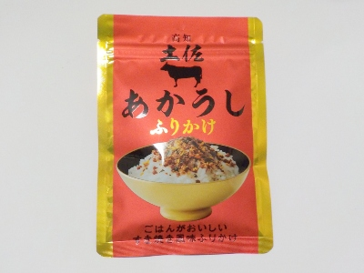

フタバの土佐あかうしふりかけ ごはんがおいしいすき焼き風味ふりかけ
2026/07/10

販売者は株式会社四國建商さんで製造元がフタバさんです。
景気が悪いとふりかけが流行るそうです。私も食費を少しでも減らそうと思いふりかけを買いました。
このふりかけは1食あたり4gで1袋に30g入っています。なのでご飯が7杯は食べれる計算になります。
今までレトルトカレーを食べていた分をふりかけに変えれば、かなりコストダウンになりますね。
すき焼き風味ってことで、カリカリのお肉っぽい見た目のものが甘かったです。塩分でご飯を食べる感じではなく、甘味でご飯を食べる感じかなと思いました。